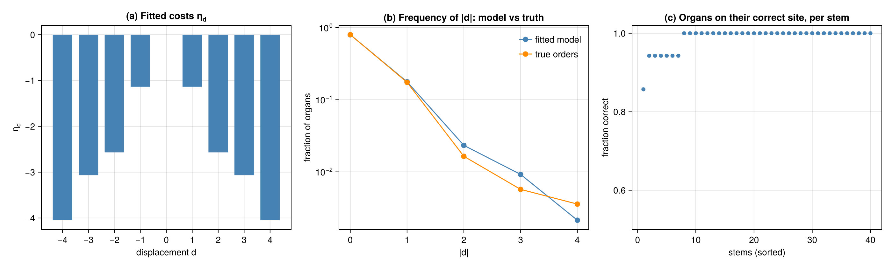

4. The propensity model
Step 1 of the plan (§1.5) needs a law of the order with the product form of §3.1, so that the sum over orders is exact, and flexible enough that the orders it reconstructs are those the angles support, not those a narrow model imposes.
4.1 The most general law that keeps the sum exact
The product form allows one factor $h_{p,\sigma(p)}$ per organ. Add one requirement:
assumption — the law is the same all along the stem: the factor depends on the displacement $d = \sigma(p) - p$, not on the height.
Then $h_{p,j}$ is a function of $j - p$ only. Write it $e^{\eta_d}$, and nothing else is left to choose:
\[P(\sigma \mid \eta) = \frac{1}{Z(\eta)} \exp\Big( \sum_{p=1}^{n} \eta_{\sigma(p) - p} \Big), \qquad Z(\eta) = \operatorname{perm}\big[ e^{\eta_{j-p}} \big]_{p,j}.\]
This is the propensity model, the law $A$ of §1.5. There is one free log-propensity $\eta_d$ per displacement $d = -k, \dots, k$. With the angles, the weights of §3 are
\[W_{p,j} = e^{\eta_{j-p}}\; e^{\kappa \cos(y_p - \phi - o\,(j-1)\,\psi - \omega_s x_p)} .\]
It is close in spirit to the stochastic model of Refahi et al. (2016), where each candidate site fires at a rate set by the inhibitory field, and keeps what the orders of a stem identify: how costly each displacement is. In the language of ranking models, it is a Mallows model (Mallows, 1957), which weighs each order by how far it is from the canonical one; here that distance is a sum of displacement costs. A Mallows model of this kind has recently been fitted with the same banded recursion (Alimohammadi and Asgari, 2025).
4.2 What $\eta$ means
- A cost, not a frequency. The organs compete for the sites: if one organ takes the site of its neighbour, the neighbour must go elsewhere. So $e^{\eta_d}$ is not the probability of a displacement $d$. The realised frequencies follow from the costs through the permanent (
estimate_displacement_frequencies). - Two directions that change nothing. Adding a constant to every $\eta_d$ changes nothing. More surprisingly, neither does tilting the costs, $\eta_d \to \eta_d + a\,d$.
Why a tilt changes nothing
Under a tilt, $\sum_p \eta_{\sigma(p)-p}$ gains $a \sum_p (\sigma(p) - p)$. For a permutation, $\sum_p \sigma(p) = \sum_p p$: the displacements of an order always sum to zero. Every order gains the same amount (zero), and $P(\sigma \mid \eta)$ is unchanged. ∎
The code therefore fixes $\eta_0 = 0$ and uses symmetric costs, $\eta_{-d} = \eta_d$. Free costs on the two sides would not pay for themselves:
- the tilt moves the overall balance between positive and negative displacements without changing any probability, so that balance would be set by the prior alone;
- what remains of the asymmetry is carried by the rarer patterns of three organs or more (an organ that jumps two places one way while its neighbours each shift one place back);
- and the question an asymmetry would answer, are the off-time organs early or late?, is a question about timing. §5 asks it directly, with a law in which early and late have a physical meaning.
4.3 Prior
assumption — a larger displacement is never cheaper than a smaller one: $\eta_d = -(\Delta_1 + \dots + \Delta_d)$ with independent log-normal gaps $\Delta_j > 0$ (default means 0.5, 1.25, 2, 3.75).
The rare long displacements are set mostly by this prior, since a stem has few of them. For the fit, the gaps are mapped to the real line by a softplus (LogNormalSoftPlus).
4.4 Fitting
The parameters ($\eta$, $\log\mu_\kappa$, $\sigma_\kappa$, $\alpha$, the twist population $m_\omega, s_\omega$ and the outlier probability $\pi_o$) are fitted by maximum a posteriori.
- Parameters on the real line. Positive parameters go through a log, probabilities through a logit, and the costs $\eta$ through the softplus map of their gaps (§4.3). The log-Jacobian of these maps is part of the log density.
- Newton's method with a trust region. The value, the gradient and the Hessian are computed in one call, and the Hessian only when the optimiser asks for it. The gradient is analytic (§3.6). The Hessian is one pass of forward-mode dual numbers through the analytic gradient. A non-finite evaluation counts as a rejected step.
- Uncertainty. Laplace approximation: $-H^{-1}$ at the maximum is the covariance of the unconstrained parameters (
vcovmaps it to the natural parameters,coeftableadds intervals). - Model comparison. The integrated log-likelihood at the maximum (
loglikelihood(fit), priors excluded). Timing laws are compared with the propensity model and with each other by $\Delta\ell$ (§5.5). - Cost. The work grows in proportion to the number of stems and of nuisance nodes (
ngrid_ϕ×ngrid_κ× twist nodes, §2.6). The stems are shared out between threads, so start Julia with several (julia -t auto).
Figure 1 shows the fitted costs of the running example, and the orders they reconstruct.

Figure 1. The propensity model fitted to the 40 simulated stems of the example. (a) The fitted costs $\eta_d$. (b) The realised frequency of each displacement under the fitted costs, against the frequency in the true orders. (c) The fraction of organs whose most probable site is correct, stem by stem.
4.5 Fitting with the twist integrated out
The twist of each stem is integrated out by a quadrature whose nodes sit on the peaks of that stem's own likelihood (§2.6). The nodes depend on the parameters where they were placed, so fit_map updates the fit and the nodes in turn; during each Newton fit the nodes stay fixed, and the objective is a smooth function of all the parameters, $(m_\omega, \log s_\omega)$ included:
- fit without twist;
- place the nodes;
- fit with each stem at its best mode;
- place the nodes again;
- fit the integrated objective.
It then optionally places the nodes once more and refits (recenter).
4.6 Why not stop here
The propensity model reconstructs the orders well, but its parameters only describe them. A cost $\eta_2 = -2.5$ says that displacements by two are rare, not why: whether they come from an organ initiated late or early, or how the displacements of neighbours go together. That needs a mechanism, the subject of §5.
Code. PhyllotaxisModelAD(angles, PhyllotaxisPrior(); outlier = true, torsion = TorsionPrior(...), torsion_x) (torsion = nothing: no twist), fit_map (the one fitting function: it follows the model's options and returns a PhyllotaxisFit, whose display shows its checks; fit_diagnostics, coef, coeftable, vcov, stderror, loglikelihood), constrained_parameters (η is the full vector of $2k + 1$ costs), unconstrained_parameters, prior_mean_parameters, full_eta; post-processing: estimate_displacement_frequencies, estimate_permutation_frequencies, displacement_probability; simulation: simulate_stems(η; ...), sample_prior. LogDensityProblems: logdensity(model, θ) (constrained) and TransformedLogDensityProblem(model) (unconstrained, with its gradient) are the log posterior that fit_map maximises, the twist hyperparameters included (with a twist, over the quadrature nodes of the last fit).